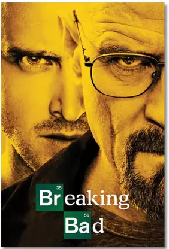
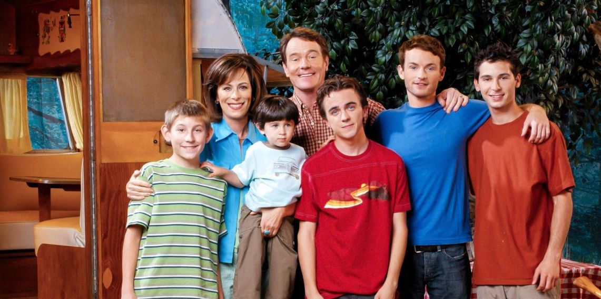

Creo que sin duda las series en la actualdad son un metodo de entretenimiento bastante popular entre las personas, ya que nos surmegen en historias que pueden ser bastante interesantes, ahora hablare acerca de mis favoritas.

Sin duda una de las series mas famosas en los ultimos años, la considera mi serie favorita ya que me encanta la evolucion que tienen los personajes a lo largo de toda la serie, sin duda es merecido su exito. 
Esta serie me ha acompañado a lo largo de casi toda mi vida, ya que esta serie siempre estaba durante las tardes en la television empece a agarrarle cariño y actualmente la considero de mis series favoritas
Un actor en comun destas dos series en Bryan Cranston, el cual lo considero uno de mis actores favoritos.